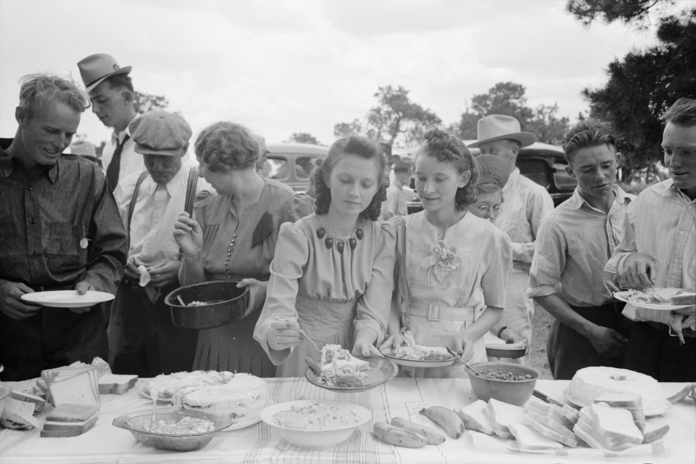

You do a staggering amount of communicating and a surprisingly small amount of connecting.
Debate this
"Every movement that ever mattered would have spread faster with today's platforms."
Goal of today
What you'll walk out with
Today you'll dig into a claim that sounds wrong at first, that "social media" is far older than your phone, and wrestle with what real connection actually takes. You'll leave having started to name the one cause you'll carry all semester, then take it deeper in the module and lock it in.
List every way you sent or received a message in the last 24 hours.
All of them, beyond the apps: texts, DMs, a like, a Snap, a call, a wave to a neighbor, a note on the counter, a meal shared with someone. Then star the ones that made you feel closer to another human being.

Dinner on the grounds at an all-day community sing, Pie Town, New Mexico, 1940. Russell Lee (Library of Congress, FSA).
Before phones, before the internet, how did people build community and move ideas around?
Give me the old technologies of gathering.
Transmission
Sending. Moving information across space to reach people: a text, a news bulletin, an ad, a viral post. Good at REACH.
Ritual
Gathering. Drawing people into a shared world and shared meaning: a potluck, a church service, a singing, a shared meal, a march. Good at TRUST and belonging.
Look at the word itself. What other words hide inside "communication"?
James Carey named these two views in 1975. Every medium does some of both, but your phone trained you hard in transmission and barely at all in ritual. That gap is what this whole course is about. You'll go deeper on it in today's module.
Bowling alley, 1940. Arthur Rothstein (Library of Congress).
For decades, we have done more and more "bowling alone." What else have we stopped doing together?
Robert Putnam, a political scientist, coined "bowling alone" in a 1995 essay: we still bowl, but hardly ever in leagues, and the leagues, clubs, and standing weekly gatherings are what built trust and belonging. He was asking why Americans had spent decades quietly dropping out of civic life. None of them had reach. All of them had trust.
Your turn
What is one thing that has been quietly bugging you about the world lately, big or small?
Something small and real is fine, the thing you'd actually want to fix. This is the seed of the cause you'll carry all semester.
Your cause · the spine of this course
A good cause for this course clears six bars.
Small, real, nameable, yours. Specific beats vast, every time.
1 · You care
A real personal stake, not a cause you "should" care about.
2 · Real & specific
A nameable thing, not a vast abstraction.
3 · Low-traction
Under-covered, so your work can actually matter.
4 · A media job
People to reach, a story to tell.
5 · Lasts a semester
Enough there to carry for fourteen weeks.
6 · Safe & ethical
No danger to you or anyone else.
Now: your module
Open the course website, go to the Week 1 Thursday module, then open your Field Notebook.
Work through it at your own pace and do the writing. We'll reconvene at the end of class to share what you found.